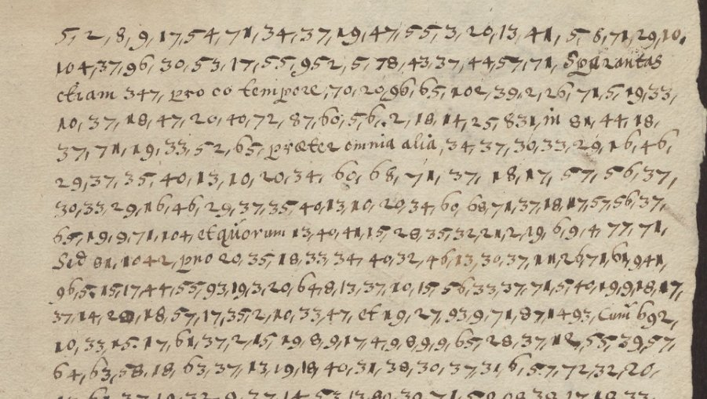

At a glanceExternal key matched · none (key obtained, text not read)
- The letter
- A letter in Swedish and Latin, sender and recipient not named. A later archival note at the foot reads “Legat … till L. Camerarius bref för 1628”: filed with the letters to Ludwig Camerarius for 1628.
- Where
- Riksarkivet, Stockholm, Chifferklaver låda II:114; DECODE R4284, undated (1600–1699), with no decipherment recorded. Formerly part of catalogue item 207.
- The cipher
- A homophonic alphabet of numbers 1–108, four for each letter, with larger numbers for words; Latin connectives in clear between the runs.
- The key
- The alphabet strip of DECODE R4325, another sheet in the same boxes, found by Dolly Moulekhi and checked here on the image.
- Still open
- A reading and translation of the decoded text, and 23 larger numbers that are probably word codes.
This letter was filed on this site until 14 October 2026 with thirteen other Riksarkivet records of catalogue item 207. They are different ciphers, each with its own page: the archbishop of Bremen’s letters of 1631 (deciphered), R4282 (deciphered by George Lasry), R4306 (deciphered in part by George Lasry), Rusdorff’s letters of 1628 and the E 708 letters of 1633.
01The letter

The letter fills two pages. The clear words are connectives (Sed, Cum, Quo casu, Sed etiam tam pro), so the matter itself is all in figures. The archival note ties it to Ludwig Camerarius, the Palatine diplomat who from 1626 served Sweden, and to the year 1628; it does not say who wrote it.
A second leaf in the record holds four Latin phrases, effusorem sanguinis, pestem patriae, praeter naturalem and disturbatorem religionis, each written over equivalents in a letter cipher. It looks like a test of a key, perhaps of another cipher; it has not been used.
02What was tried
- 21 September 2026: the letter was transcribed from the DECODE images, about 750 numbers in the first count, with some twenty doubtful readings where two numbers may run together. Measured again on 14 October 2026, the file holds 822 groups and 170 different forms.
- Homophonic substitution was annealed against a Latin model, eight runs of 250,000 steps, and again on the guess that the numbers come in bands of four. The output was Latin-sounding nonsense.
- Seventy key records from the same Chifferklaver boxes (R4259–R4329) were fetched. Two were tested, the Transylvanian “Schauis” key (R4310) and a 1632 key in which 30 ends every word (R4296). Neither fits. The key, as it turned out, was among the other 68.
03The key found: R4325
In October 2026 Dolly Moulekhi tested the Chifferklaver key sheets against this site’s transcription and found that one fits: not the square grid on R4325 (Chifferklaver låda II:152), but the separate strip below it, a row of letters A to Ö with four numbers under each (a 5 29 55 102, e 9 37 57 104 …; Y and Z share a column; 22, 51, 74 and 89 are unused). Her reading of the strip was checked here on the DECODE image and agrees in all 104 values.
Applied unchanged, it gives a letter to 729 of the 754 numbers, and they run as Swedish of the 1620s, with Latin enciphered as well as in clear: kunna giöra, orsak skull negociera, giorde ios der med een behageligt tienst och dette kunde skee på några …, media quae longum foret recensere, nobis et patriae securum, hafwa allaredan så många hamnar inne i Östersiön, det intet rådeligt ähr att öfwerlåta dem, sina barn och arfwingar som för sina wenner och förwanter. So the letter is mainly Swedish, not Latin as catalogued, and it concerns harbours on the Baltic.
The project’s statistical test is underdetermined here: the decode scores −3.12 per letter, above every key fitted to the shuffled ciphertext (best −3.22) but not by the margin a pass needs. Some 750 numbers spread over 104 values are too few for a letter model, and the text mixes two languages. The case for the match is the archival key itself, applied unchanged, and the running Swedish it produces. The decoded text is not yet a reading: it still has to be divided into words and translated, and 23 larger numbers, probably word codes from the same sheet, are unresolved.
04What remains
- A reading: the decode divided into Swedish and Latin words, the anomalous strings marked, and a translation.
- The 23 larger numbers (952, 347, 831 …), to be tried against the word lists on R4325, and the doubtful multi-digit readings, to be checked on the image.
05Sources
- Riksarkivet, Stockholm, Chifferklaver låda II:114: DECODE R4284 (two images).
- Key records of Chifferklaver låda II, DECODE R4259–R4329; the key is R4325, image I25940.
- Dolly Moulekhi, issue #98, her article and evidence files (October 2026).
- No earlier decipherment was found; that does not prove none exists.
Transcription and notes: targets/riksarkivet4284/; the solver is in targets/riksarkivet1628/.